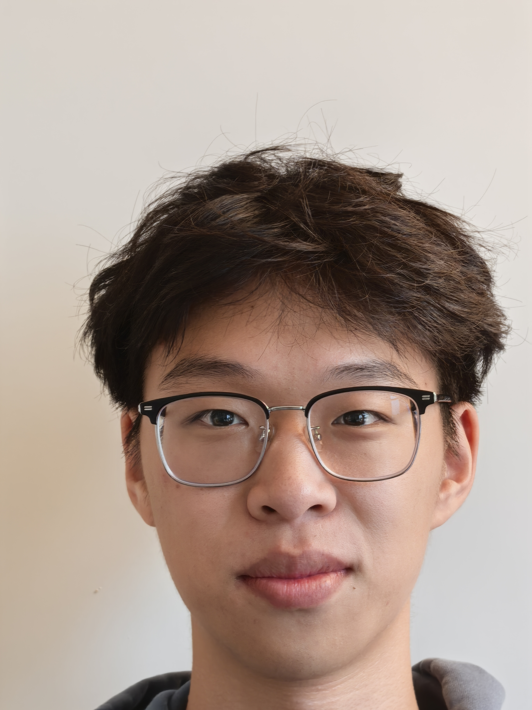
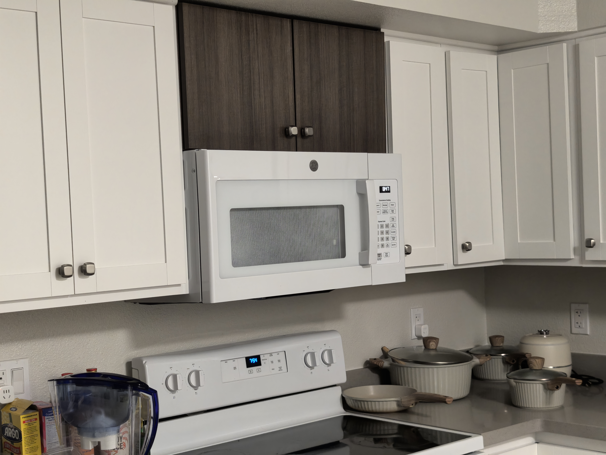
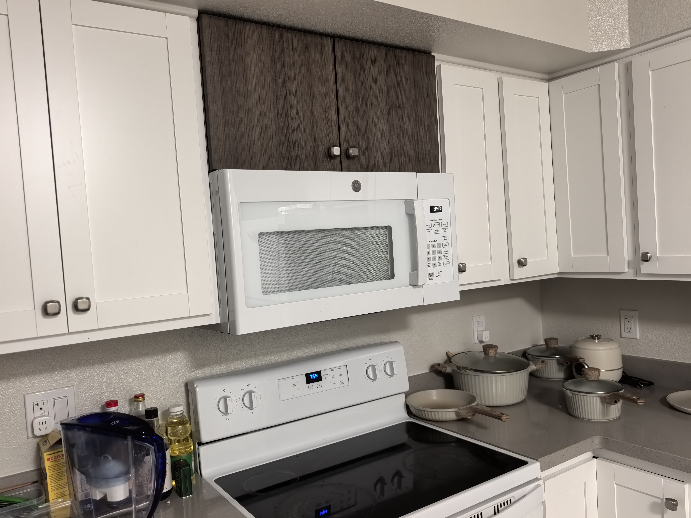
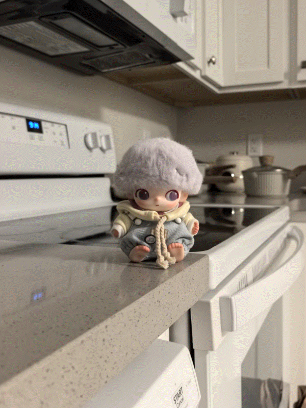

Project 0
Becoming Friends with Your Camera
Part 1: Selfie — The Wrong Way vs. The Right Way


By comparing the two photographs, we can clearly see that the nose occupies a much larger proportion of the face in the close-up image, whereas the facial features in the distant image are closer to their natural proportions.
We can imagine the camera's field of view as a triangular region. When the face is very close to the camera, the distance by which the nose protrudes is large relative to the overall camera-to-face distance. Because image magnification is inversely proportional to distance, the nose is magnified more than the cheeks and ears, making the difference especially noticeable. After the camera moves farther away, the same physical depth difference becomes very small compared with the total shooting distance. The facial features are therefore magnified by more similar amounts, so the face appears flatter and closer to its natural proportions.
Part 2: Architectural Perspective Compression


As in Part 1, when we move the camera farther away, the subject occupies a smaller portion of the frame. Zooming in restores its apparent size, but the differences in distance among the objects become small relative to the overall camera-to-scene distance. As a result, objects at different depths are rendered at more similar scales and appear to be compressed together. When we photograph the scene from close range, those depth differences make up a much larger proportion of the shooting distance. Nearby objects therefore appear noticeably larger than objects farther away, creating a stronger sense of depth without the same compressed appearance.
Part 3: The Dolly Zoom
